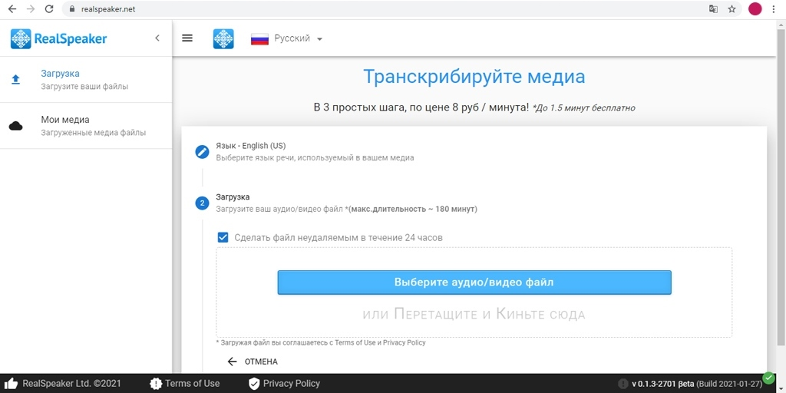

_____________________________________________________________________________________________________________
RealSpeaker - это мультиязычная платформа для транскрибирования медиа файлов, основанная на искусственном интеллекте.
Сервис расшифровывает загруженные файлы — то есть сначала нужно записать голос на телефон, сохранить аудио, а потом расшифровать. Надиктовать с одновременной транскрибацией не получится.
Бесплатно можно расшифровать файл длиной в полторы минуты. Минус сервиса — ваш файл оказывается в общем списке расшифровок всех пользователей. Даже если сразу после прочтения его удалить, какое-то время он будет доступен кому угодно — то есть никакой приватности.
Логотип RealSpeaker

Пример работы в RealSpeaker
Главные преимущества RealSpeaker:
Главные недостатки RealSpeaker:
A подробное описание данной программы и как ею пользоваться можно посмотреть в видео ниже:
Как пользоваться программой RealSpeaker